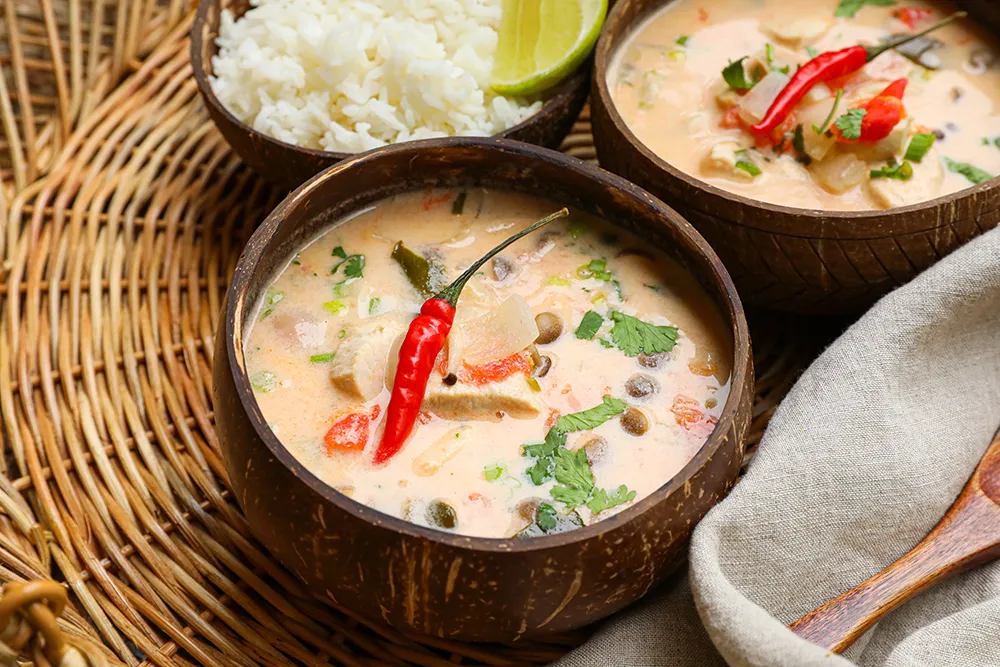

TomKhaGai

Description
Tom Kha Gai is a popular Thai soup known for its intense galangal, coconut aromatic flavor.
The literal translation is “boiled galangal chicken” but can be broken down as:
TOM means SOUP or BOILED/COOKED, KHA means galangal root and GAI means chicken.
Ingredients
- 10 cups chicken stock
- 2 (5 ounce) skinless, boneless chicken breasts, sliced
- ½ cup shiitake mushrooms
- 3 red chile peppers, chopped
- 8 kaffir lime leaves
- 2 stalks lemongrass, chopped
- 2 (14 ounce) cans coconut milk
- ½ cup green bell pepper, chopped
- ½ cup red bell pepper, chopped
- 5 tablespoons fish sauce
- (1 inch) pieces galangal, peeled and chopped
- 4 tablespoons lime juice
- 6 green onions, sliced
- 1 tablespoon chopped Thai basil
- 1 tablespoon chopped fresh cilantro
Steps
- Pour chicken stock in a large pot and bring to a boil; add chicken, mushrooms, chile peppers, lime leaves, and lemongrass.
- Boil until chicken is no longer pink in the centers and juices run clear, about 10 minutes.
- Reduce heat to medium and add coconut milk, bell peppers, fish sauce, and galangal.
- Boil for 2 minutes; reduce heat to low and add lime juice.
- Taste and adjust soup as necessary. Serve with green onions, basil, and cilantro.